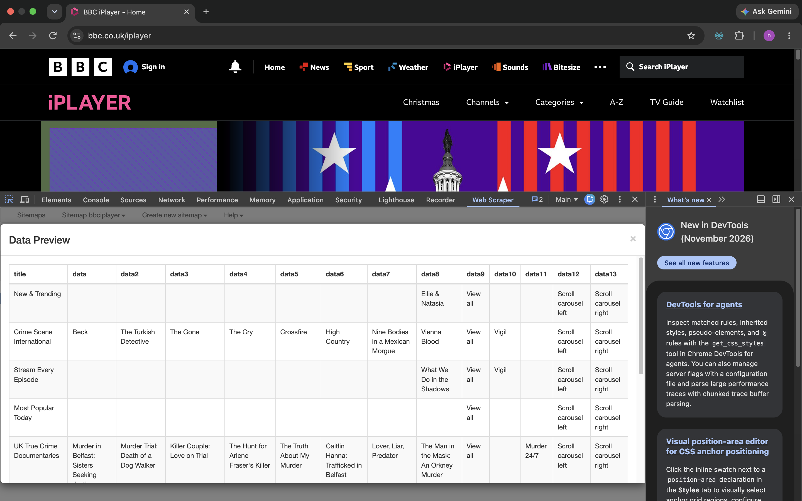
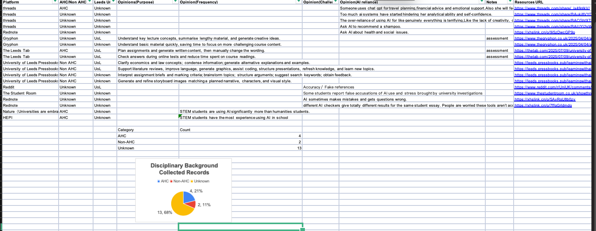
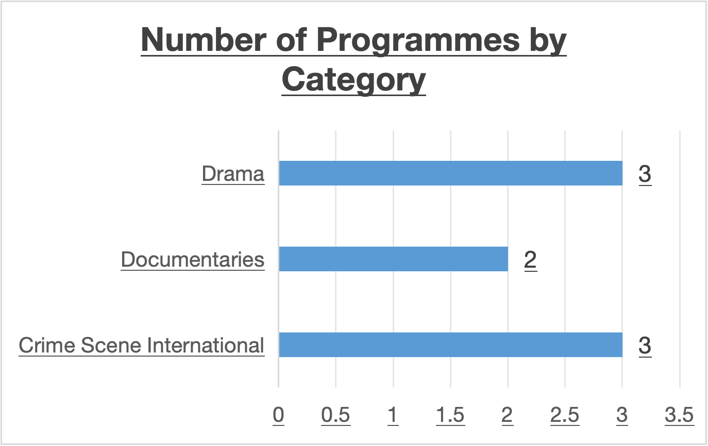

Week 2: Building My Website
In Week 2, I learned how to create a personal website using GitHub Pages. As someone with limited experience in HTML and CSS, I initially found the process challenging but also interesting.
During the workshop, I used the template provided by the tutor and began customising it. I changed the website title, edited the introductory text and experimented with colours and fonts to make the website more personal. I also learned how HTML structures the content of a webpage, while CSS controls its visual appearance.
One challenge I encountered was understanding how different parts of the HTML code worked together. Small mistakes in the code sometimes caused unexpected changes to the layout. I had to check the structure carefully and make adjustments to solve these problems.
This experience helped me realise that website development involves more than visual design. The organisation of information, code structure and accessibility are also important. I began to see my website not simply as a personal page, but as a space where I could document and communicate my learning process.
In the future, I would like to improve the navigation and layout of my website and develop a clearer structure for presenting my weekly workshop reflections.
Week 3: Web Scraping
Exploring BBC iPlayer with Web Scraper
In Week 3, I explored web scraping using the Web Scraper extension in Google Chrome. I used BBC iPlayer as an example to understand how information from a website can be collected and organised into structured data.
During the workshop, I created a sitemap and experimented with different selectors to extract programme titles. I learned how parent selectors and child selectors work together to identify information on a webpage. I also used the Data Preview function to check whether the selected information could be extracted correctly.
One of the main challenges was selecting the correct HTML elements. At first, some selectors returned empty results, while others collected unrelated text. After several adjustments, I was able to preview programme information from different sections of BBC iPlayer.
However, when I attempted to run the full scraping process, the browser opened a new page but no scraped data was saved. This showed me that a successful data preview does not necessarily mean that an automated scraping task will work. Dynamic website content and selector configuration can affect the results.
This experience helped me understand that web scraping requires testing, patience and careful evaluation of data quality. In future, I would like to improve my understanding of CSS selectors and learn how to troubleshoot scraping errors more systematically.
Evidence of My Web Scraping Practice
The screenshot below shows the Data Preview function displaying programme information collected from BBC iPlayer during my practice.

THE DISCOVERY
Week 4: Data Collection
Exploring students’ experiences of generative AI
In Week 4, our group collected online material to explore how students from Arts and Humanities (AHC) and other disciplines experience generative AI. Our spreadsheet brings together 19 records from Threads, Rednote, Reddit, The Student Room, student news websites, University of Leeds Pressbooks, Nature and HEPI.
We organised the material by platform, disciplinary label and University of Leeds affiliation, with separate columns for purpose, frequency, challenges and AI reliance. This structure helped me see that a research question needs clear categories. It also made gaps visible: many records contain information about only one aspect of AI use.
What the collected material shows
The notes describe uses such as understanding lecture concepts, planning assignments, improving language, coding and developing storyboard images. Other entries record concerns about inaccurate answers, fabricated references, inconsistent AI detection and dependence on AI. These are themes recorded in our source notes. They do not establish how common each experience is among students.
Our data collection process
The screenshot below preserves our group’s working spreadsheet and initial pie chart. It shows how we brought together source notes, organised them into categories and began turning the collected material into a visual summary.

Checking the spreadsheet against the earlier chart revealed a counting inconsistency. The 19 rows are currently labelled AHC in four cases, Non-AHC in four cases and Unknown in eleven cases. The earlier chart showed four, two and thirteen. Recounting the entries reminded me to check a visualisation against its underlying data before using it to support an argument.
Labels in our group spreadsheet
| Recorded label | Records | Share |
|---|---|---|
| AHC | 4 | 21.1% |
| Non-AHC | 4 | 21.1% |
| Unknown | 11 | 57.9% |
| Total | 19 | 100% |
Source: our group’s Digital Practices.xlsx. Counts preserve the existing labels, including “Non AHC”, displayed here as “Non-AHC”. Percentages are rounded independently. These are record counts, not counts of unique students or verified disciplinary backgrounds.
Limits and next steps
The majority of records are labelled Unknown, so this collection cannot support a reliable comparison between disciplines. The Nature and HEPI entries are labelled AHC even though their notes discuss broader disciplinary comparisons. These labels need a clearer definition before being treated as evidence about individual students.
I also noticed that two Gryphon entries share one article URL, and two Leeds Tab entries share another. A spreadsheet row therefore does not necessarily represent an independent source or respondent. The Nature and HEPI rows have no source URL recorded, making those entries harder to trace. Mixing personal posts, reported experiences and broader reports also requires care.
This activity helped me think more critically about what a dataset can tell us. In future, I would define the unit of analysis, record the evidence behind each disciplinary label, complete missing references and distinguish personal accounts from reports. I would then recalculate the summary after reviewing the coding, rather than drawing conclusions from the chart alone.
Week 5: Data Visualisation
BBC iPlayer: Exploring Programme Categories
In Week 5, I practised web scraping using BBC iPlayer and the Web Scraper browser extension. This was a new experience for me because I had limited knowledge of web scraping before this workshop.
During the activity, I learned how to collect programme information from a website and organise it into a spreadsheet. I then selected three categories and used WPS Spreadsheets to create a bar chart comparing the number of programmes in each category.
One challenge was understanding how to organise the collected data into meaningful categories. I realised that collecting information is only the first step. The way data is selected, classified and visualised also influences how people understand it.
My chart shows three selected programmes in Crime Scene International, three in Drama and two in Documentaries. However, this small sample does not represent the full BBC iPlayer catalogue. This made me reflect on how visualisations can appear objective while still depending on the researcher's choices.
This workshop helped me understand both the usefulness and limitations of web scraping and data visualisation. In future, I would like to collect a larger dataset and establish more consistent criteria for selecting and classifying programmes.
BBC iPlayer Data Visualisation

This chart shows the number of programmes in three selected BBC iPlayer categories. Crime Scene International and Drama each had three programmes, while Documentaries had two. The data was collected during my web scraping practice.
Group Project: Visualising Disciplinary Backgrounds
Alongside the BBC iPlayer activity, I learned about data visualisation through our group’s collection of online material about generative AI. We organised the records using three disciplinary labels: AHC, Non-AHC and Unknown. Turning these labels into a chart helped me connect the data collection work in Week 4 with the visualisation practice in Week 5.
Learning how to build a chart
I learned that the first step is to prepare a clear summary table, with each category in one column and its count in another. The category names and numerical values can then be selected together to insert a chart in the spreadsheet. A pie chart shows how each category contributes to the total, while the bar chart in my BBC activity makes differences between category counts easier to compare.
I also learned how a title, legend and data labels work together. The title explains what is being counted, the legend connects colours to categories, and the labels show the counts and percentages. These details make a visualisation easier to read, but they only help if the summary table and selected data range are correct.

What I learned from checking the visualisation
The large Unknown segment made missing background information immediately visible. However, checking the workbook showed that the original counts in this chart needed correcting. This helped me understand that creating a chart involves checking the category totals, the selected cells and the labels, as well as choosing colours and a chart type. A clear-looking chart can still communicate an inaccurate summary.
These records also come from a mixture of online posts and reports, with some entries sharing a source. The chart therefore describes the labels in our collection, rather than the proportion of students in each discipline or how often they use AI. In future, I would review the coding, check that the category counts add up to the total, and update the chart whenever the source table changes.